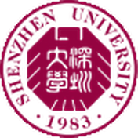
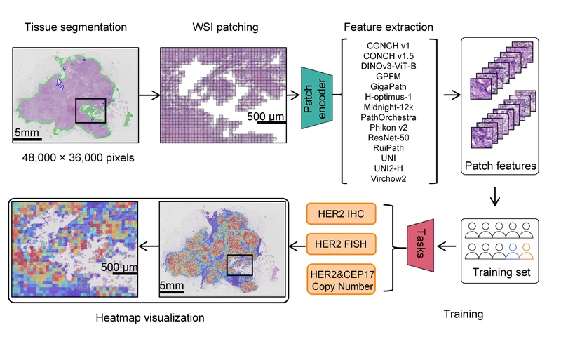
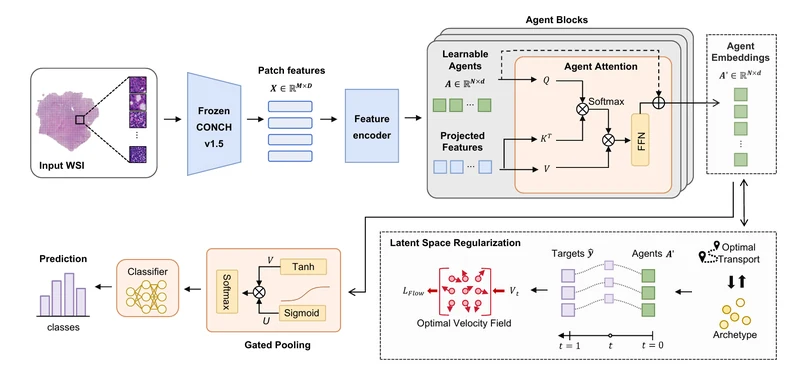
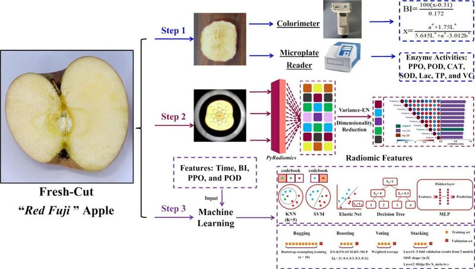

Shenzhen University
M.Sc. student in Biomedical Engineering
I am a master’s student in Biomedical Engineering at Shenzhen University. My research focuses on deep learning for medical image analysis, with an emphasis on computational pathology, multiple instance learning, and multimodal agents.
FGA-MIL accepted at IEEE BIBM 2026.
Our study on HER2 amplification and CEP17 polysomy accepted by npj Breast Cancer.
Received a Merit Award at the Shenzhen University AI4S Agent Innovation Competition.

M.Sc. student in Biomedical Engineering
B.A. in Management · Logistics Management
* Equal contribution · † Corresponding author

A multicenter evaluation of pathology foundation models for predicting HER2 amplification and CEP17 polysomy in breast cancer.

FGA-MIL aggregates whole-slide patch features with latent agents, combining optimal transport and conditional flow matching to structure class representations.

RGB radiomics for non-destructive assessment of apple browning and enzyme activities.